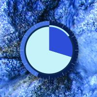
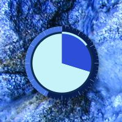
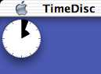

TimeDisc
v 0.3.0

Copyright 2002-2003 Andreas Mayer
TimeDisc
Copyright 2002-2003 Andreas Mayer
TimeDisc is an almost standard analog clock.
Albeit it has some unique features, you probably won't find anywhere else in that combination:
New in version 0.2:
New in version 0.3:
These screenshots will give you an idea of what you can do with TimeDisc:
 

choose whatever colors fit with your desktop scheme
use transparency to reduce distraction
sometimes less is more

small enough to fit in the menu bar

large enough to cover your desktop
Copy TimeDisc to whatever location you want and start it. TimeDisc uses colored segments to display time.
This is what the clock would look like, if it had hands:
So, supposed light grey stands for AM and dark grey for PM, it's 10:13 PM in this example.
After using TimeDisk for a while you'll probably find, that it's actually easier to see what time of day it is, than with a normal clock. Plus you can find out if it's AM or PM without looking out of the window. ;-)
Choose 'Preferences...' from the 'TimeDisc' menu. You will be presented with this window:
TimeDisc Preferences – Global
I think it's obvious what the Clock Face Size slider and the 'Show Clock' buttons do.
Choose the 'Use 24 Hours' option to display a clock face divided not into 12 but 24 segments. Additional hour tick marks will be drawn on the hours ring:
6:14 PM on a 24 hour clock
Any part of the menu bar clock can be activated separately. Alas, at least one component must be selected.
clock face, weekday, date and time — icon style clock and weekday
'Clock Beat' controls how often the clock is updated. (In the example above, the clock beat is locked to one second since TimeDisc is configured to display seconds; see 'Preferences – Layout'.)
Select 'Run with Low Priority' to give other applications precedence when you are running out of processor cycles. Under normal conditions you probably won't notice any differences. Only in situations when there is not enough processing power available, the clock may stall for a moment, letting other apps do their work first.
Note:
1. If you choose to not display the clock in the dock, the dock icon will be hidden the next time you restart TimeDisc:
note after deselecting 'Show Clock In Dock'
2. When disabling the dock icon, Mac OS X hides the application's menu, too. To circumvent this limitation, TimeDisc enables the menu bar clock whenever the dock icon is not displayed. This way you have access to all of TimeDisc's functions through the menu bar clock's pull down menu:
pull down menu from the menu bar clock
Let's have a look at the options for TimeDisc's main window:
TimeDisc Preferences – Window
The 'Clock Face Size' slider adjusts the diameter of the clock window in screen pixels.
You may select any grade of 'Transparency' between opaque and totally invisible (though TimeDisc will reset the value on restart if you left it on fully transparent).
You can choose one of the following window levels:
Deselect 'Display Shadow' to hide the shadow around the clock face.
'Mouse Activates Window' is the standard behaviour. A click on the clock window tops it and brings TimeDisc to front. Dragging moves the window.
If you deselect this option, any mouse click will go right through the clock window to whatever lies below it; be it another window or the desktop.
Note:
'Show on Desktop' and 'Mouse Activates Window' are available on Mac OS X 10.2 and later only.
On this page you choose the overall look of your desktop clock:
TimeDisc Preferences – Layout
TimeDisc displays time in concentric colored rings. By selecting a 'Ranking' you decide what unit of time is displayed at what position. The one to go innermost is mentioned first, the last one ends up on the outer ring.
Seconds may not only be displayed as a ring, but also as a dot, moving along the perimeter of the middle ring. Or you may switch off the seconds display altogether. Here you can see both display methods in comparison:


comparison between seconds display as ring or as dot
The diameter of the outermost ring equals the diameter of the whole window. You set the size of the 'Inner Disc' and the 'Middle Ring' relative to that diameter. When a middle ring is to be displayed but it's diameter is smaller than that of the inner disc, the middle ring will not be visible. This is indicated by this caution note:
note when Middle Ring is not visible
You may change the color of any part of the clock; be it hour or minute segments, seconds dot or tick marks:
TimeDisc Preferences – Color
Saving and loading of themes (sets of color and layout preferences) is described in the next section.
'Hours (AM)' refers to the part of the inner disc that display the hours before noon, 'Hours (PM)' stands for the other part.
Similar goes for the minutes. Minutes in odd hours draw in the first color, those in even hours in the second. Same for seconds, only that this time the color is based on the current minute (even/odd).
'Randomize' chooses random colors for all elements. TimeDisc tries to select colors that are visually distinctive, so that you will actually be able to read the clock.
All colors are chosen from a color source, i.e. a picture. The default color source comprises the whole color space. It gets more interesting when you select a real picture as a source. In that case you will get colors from that picture only. You may even select not just a single picture, but a folder of pictures as a color source. In this case TimeDisc will choose a random picture from that folder each time you hit 'Randomize'.
Use the 'Theme' popup menu to select an existing theme, create a new one or manage your theme library.
TimeDisc Preferences – Selecting Themes
Note:
You can not alter an existing theme; whenever you change a theme relevant setting, the selected theme will revert to 'Unnamed'. You may then save your changes as a new theme.
'Edit Themes...' let's you alter theme names, delete themes as well as im- and export theme files.
TimeDisc Preferences – Editing Themes
It is also possible to drag themes from and to the theme list.
Themes may be received as theme files or as text clippings. You can even import a theme in text form, provided it has a valid syntax.
Try this one:
(Choose 'Edit Themes...', select the highlighted text below and drag it onto the theme list.)
<?xml version="1.0" encoding="UTF-8"?> <!DOCTYPE plist PUBLIC "-//Apple Computer//DTD PLIST 1.0//EN" "http://www.apple.com/DTDs/PropertyList-1.0.dtd"> <plist version="1.0"> <dict> <key>Colors</key> <dict> <key>HoursAM</key> <data> BAt0eXBlZHN0cmVhbYED6IQBQISEhAdOU0NvbG9yAISECE5TT2JqZWN0AIWE AWMBhARmZmZmgz9/AACDPr4AAIM9kAAAAYY= </data> <key>HoursPM</key> <data> BAt0eXBlZHN0cmVhbYED6IQBQISEhAdOU0NvbG9yAISECE5TT2JqZWN0AIWE AWMBhARmZmZmgz6iAACDPy0AAIM/WAAAAYY= </data> <key>MinutesEven</key> <data> BAt0eXBlZHN0cmVhbYED6IQBQISEhAdOU0NvbG9yAISECE5TT2JqZWN0AIWE AWMBhARmZmZmgz9/AASDPr4ACIM9kAAAAYY= </data> <key>MinutesOdd</key> <data> BAt0eXBlZHN0cmVhbYED6IQBQISEhAdOU0NvbG9yAISECE5TT2JqZWN0AIWE AWMBhARmZmZmgz6h//iDPyz//IM/WAAAAYY= </data> <key>SecondColor</key> <data> BAt0eXBlZHN0cmVhbYED6IQBQISEhAdOU0NvbG9yAISECE5TT2JqZWN0AIWE AWMBhARmZmZmAAEAAYY= </data> <key>SecondsDot</key> <data> BAt0eXBlZHN0cmVhbYED6IQBQISEhAdOU0NvbG9yAISECE5TT2JqZWN0AIWE AWMBhARmZmZmgz54AACDPKAAAIM9EAAAAYY= </data> <key>SecondsEven</key> <data> BAt0eXBlZHN0cmVhbYED6IQBQISEhAdOU0NvbG9yAISECE5TT2JqZWN0AIWE AWMBhARmZmZmgz9/AASDP37Hh4M+d86sAYY= </data> <key>SecondsOdd</key> <data> BAt0eXBlZHN0cmVhbYED6IQBQISEhAdOU0NvbG9yAISECE5TT2JqZWN0AIWE AWMBhARmZmZmgz5iqjiDPmyULoM/bvj0AYY= </data> <key>TickMarksHour</key> <data> BAt0eXBlZHN0cmVhbYED6IQBQISEhAdOU0NvbG9yAISECE5TT2JqZWN0AIWE AWMBhARmZmZmAAAAAYY= </data> <key>TickMarksMinute</key> <data> BAt0eXBlZHN0cmVhbYED6IQBQISEhAdOU0NvbG9yAISECE5TT2JqZWN0AIWE AWMBhARmZmZmAAAAAYY= </data> </dict> <key>Layout</key> <dict> <key>Display24Hours</key> <string>YES</string> <key>DisplaySeconds</key> <string>2</string> <key>InnerDiscSize</key> <string>0.4666667</string> <key>MiddleDiscSize</key> <string>0.8291667</string> <key>UnitRanking</key> <string>5</string> </dict> </dict> </plist>
You end up with a new theme labelled 'Unnamed 2' in your theme list. Close the sheet and select your new theme to see what it looks like. (This one is a rather unusual design.)
TimeDisc is freeware. You may copy this application, hand it on, disassemble it or do with it what ever you like.
For comments or suggestions, please send me an email or have a look at the www.furrysoft.de website.
I'm looking forward to your reactions!
If you like TimeDisc, you may consider helping further development by making a donation to my PayPal account.
Thank you very much for your support!